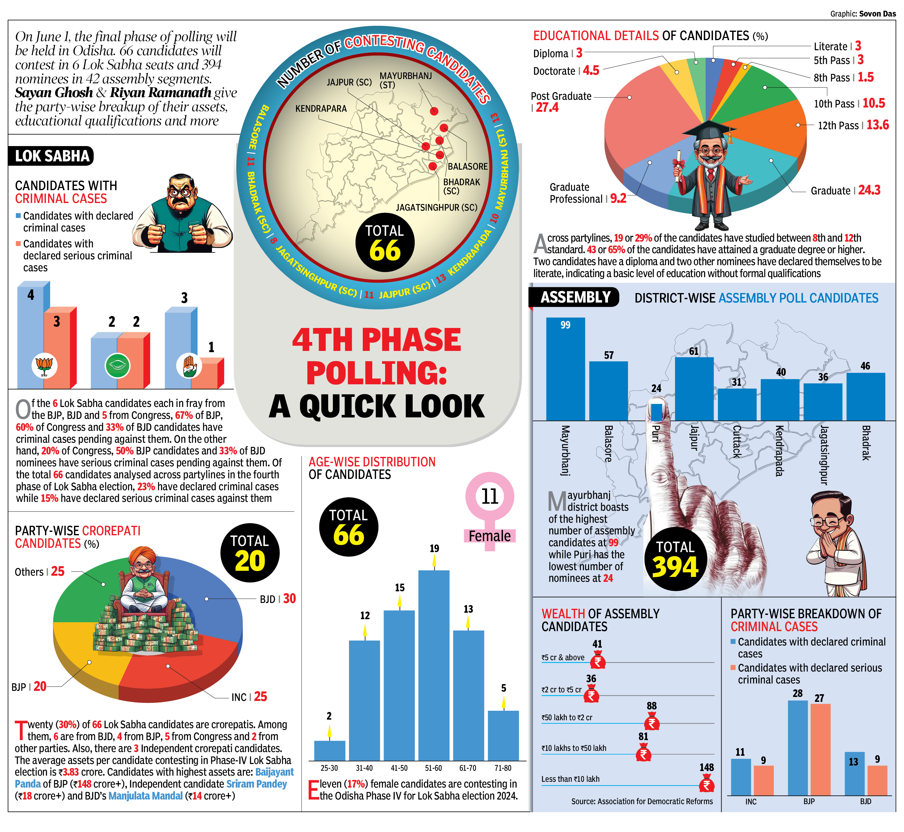

Odisha's final phase: 66 Lok Sabha candidates across six seats and 394 assembly nominees. Thirty per cent of Lok Sabha candidates were crorepatis, averaging ₹3.83 crore in declared assets, and 23% had criminal cases pending. Mayurbhanj fielded 99 assembly candidates; Puri fielded 24.
